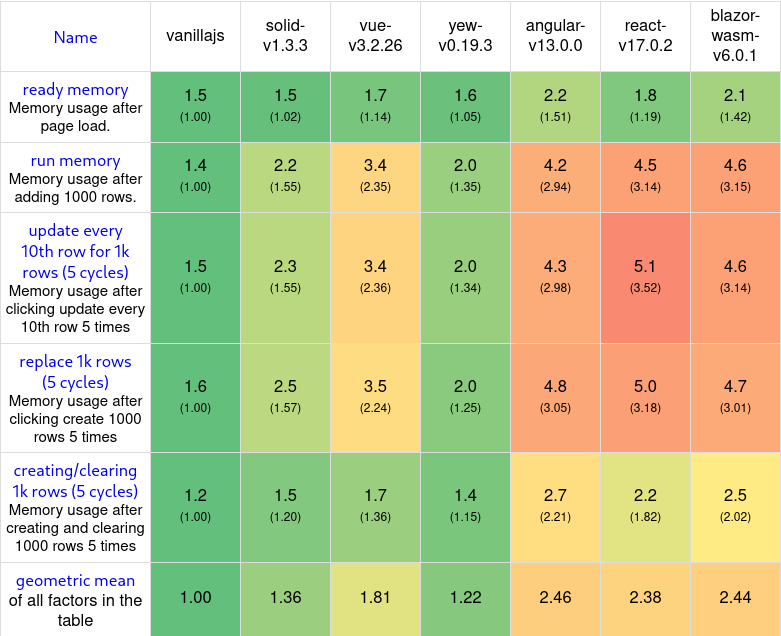
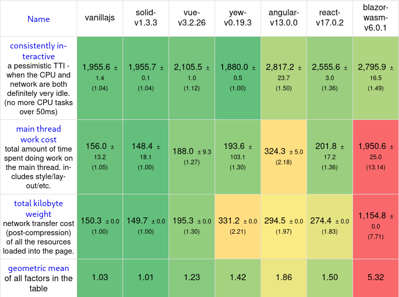

RightCrowd & Rust
Branco Bruyneel
Stagebedrijf

Stageopdracht

Plan van aanpak
-
Research
- ELK, KAFKA, CQRS, event sourcing
- Wekelijkse demo's
- Implementatie
- Demployment
Technische overwinningen
- Node.js + Typescript & Express.js
-
ElasticSearch
- Datastream
- cloud
- SSE + Redis
- Kubernetes
- Load testing (k6)

Wat is de huidige status van Rust voor het bouwen van Webapplicaties?
Rust?
- Graydon Hoare, stabel release 2015
- low-level systeemprogrammeertaal
- uniek ownership model
- Command Line, Embedded, Networking, WebAssembly
WebAssembly?
- binair instructie formaat
-
web, cross-platform
- wasm-time
- wasi
-
integers en floating-point
- wasm-bindgen
- websys
Yew + Actix web
Yew
use yew::prelude::*;
#[function_component(]
fn UseState() -> Html {
let counter = use_state(|| 0);
let onclick = {
let counter = counter.clone();
Callback::from(move |_| counter.set(*counter + 1))
};
html! {
<div>
<button {onclick}>{ "Increment value" }</button>
<p>
<b>{ "Current value: " }</b>
{ *counter }
</p>
</div>
}
}
Benchmarks


Actix Web
use actix_web::{get, web, App, HttpServer, Responder};
#[get("/hello/{name}")]
async fn greet(name: web::Path<String>) -> impl Responder {
format!("Hello {name}!")
}
#[actix_web::main]
async fn main() -> std::io::Result<()> {
HttpServer::new(|| {
App::new()
.route(
"/hello",
web::get().to(|| async { "Hello World!" })
)
.service(greet)
})
.bind(("127.0.0.1", 8080))?
.run()
.await
}
Technische demo
Reflectie
- Razendsnel, correct & krachtig typesysteem
- Beperkt ecosysteem
- Steile leercruve
- Javascript nodig